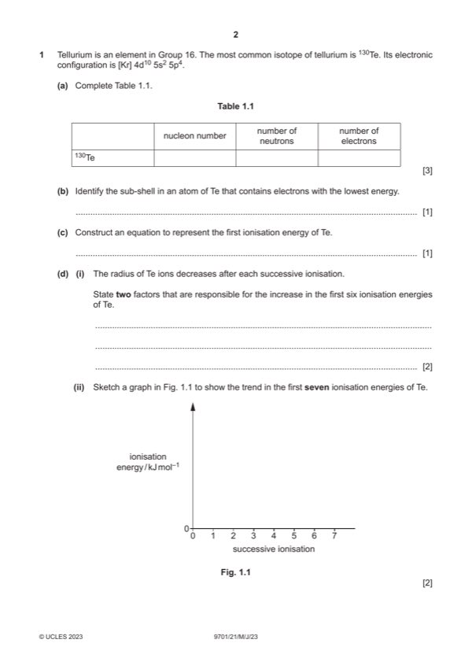

Question 1

Original paper page 2
Part 1(a) — solution
Answer: 3
3
nucleon number of number of
number neutrons electrons
Tellurium-130 130 78 52
Mark points
- Correct result: 3
Part 1(b) — solution
1s 1
Mark points
- Include the ideas shown in the solution above.
Part 1(c) — solution
Te(g) Te+(g) + e(–) 1
Mark points
- Include the ideas shown in the solution above.
Part 1(d)(i) — solution
- (increased) nuclear attraction / attraction for nucleus
- (decreased) shielding (by sub-shells) (IE 4 to 5)
- spin-pair repulsion (IE 1 to 2)
Mark points
- (increased) nuclear attraction / attraction for nucleus
- (decreased) shielding (by sub-shells) (IE 4 to 5)
- spin-pair repulsion (IE 1 to 2)
Part 1(d)(ii) — solution
Answer: 2
- [M1] general increase
- [M2] jumps from 4 to 5 and (largest) 6 to 7
Mark points
- [M1] general increase
- [M2] jumps from 4 to 5 and (largest) 6 to 7
Part 1(e) — solution
- [M1] 6 bonding pairs (of electrons and 0 lone pairs) OR coordination number = 6 OR x = 6 2
- [M2] bonding pairs repel (equally)
Mark points
- [M1] 6 bonding pairs (of electrons and 0 lone pairs) OR coordination number = 6 OR x = 6 2
- [M2] bonding pairs repel (equally)
Part 1(f)(i) — solution
TeFx + xH2O Te(OH)x+ xHF OR TeF6 + 6H2O Te(OH)6+ 6HF 1
2023 Page 6 of 10
9701/21 Cambridge International AS & A Level – Mark Scheme May/June 2023
1f(ii) hydrolysis 1
Mark points
- Include the ideas shown in the solution above.